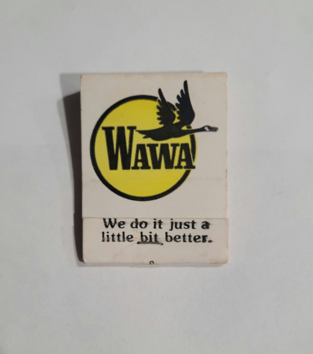

Skip to content
CHRIS SCHOR
/
SOUND
Interaction audio
Immersive narrative audio
Sketches, WIPs, Noises
About
Contact
A Musical Notepad
Demo
The Seashore — This Song (Demo)
Added
November 2, 2026

Thoughts on the paradox of acceptance
Recordings
November 2, 2026
This Song (Demo)
Featured on the notepad
Your browser does not support audio playback.